FLIT WAIT는 축제·박람회·지역 행사의 체험부스 대기와 사전 예약을 하나의 웹 서비스로 운영하는 시스템입니다. 관람객은 앱 설치 없이 QR 스캔만으로 대기표를 받거나 회차를 예약하고, 차례가 되면 카카오 알림톡으로 호출을 받습니다. 운영 스태프는 스마트폰 화면에서 호출·입장·노쇼 처리를 버튼 하나로 수행하며, 운영 관리자는 전 부스의 현황과 통계를 실시간으로 확인합니다.
| 트랙 | 적합한 부스 | 관람객 흐름 | 운영 포인트 |
|---|---|---|---|
| A. 현장 대기표 | 회전이 빠른 체험(로봇·VR·만들기 등), 상시 운영 부스 | QR 스캔 → 이름·연락처·인원 입력 → 대기번호 발급 → 앞 N팀 남으면 사전 알림 → 호출 알림톡 → 부스 방문 | 호출 유효시간(기본 5분) 경과 시 자동 노쇼 처리 후 다음 팀 호출. 예상 대기시간 자동 산출 |
| B. 사전 시간 예약 | 정원이 있는 클래스형 체험(쿠킹·공예·강연 등) | 예약 오픈 일시에 QR/링크 접속 → 날짜·회차 선택 → 예약 확정 알림톡 → 전날·시작 전 리마인드 → 현장 체크인 | 회차별 정원·시작 전 예약 마감·취소 가능 시한을 부스별 설정. 노쇼 좌석은 현장 대기자에게 자동 이관(하이브리드) |
두 트랙은 한 행사 안에서 부스별로 혼용할 수 있으며, 모든 운영값(팀당 최대 인원, 호출 유효시간, 사전 알림 시점, 예약 오픈 일시, 노쇼 기준 등)은 관리자 화면에서 행사·부스 단위로 조정합니다.
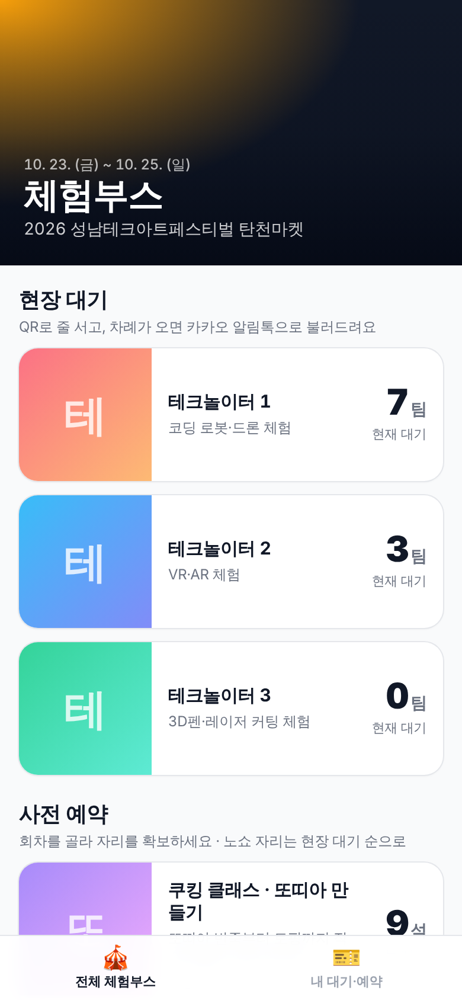
행사 체험부스 목록 · 실시간 대기 팀 수 / 잔여석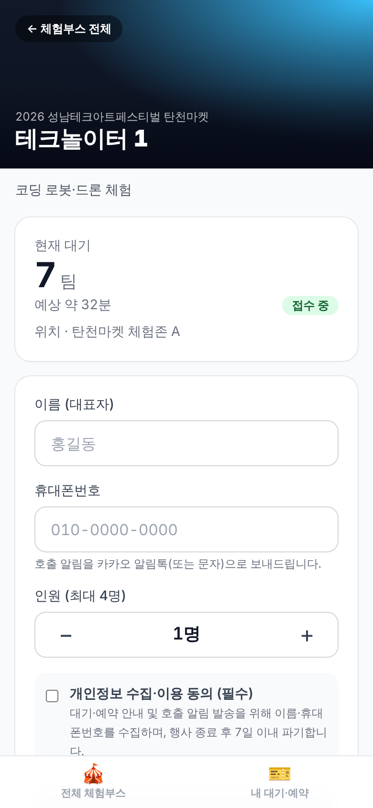
대기 접수 · 현재 대기·예상 시간 안내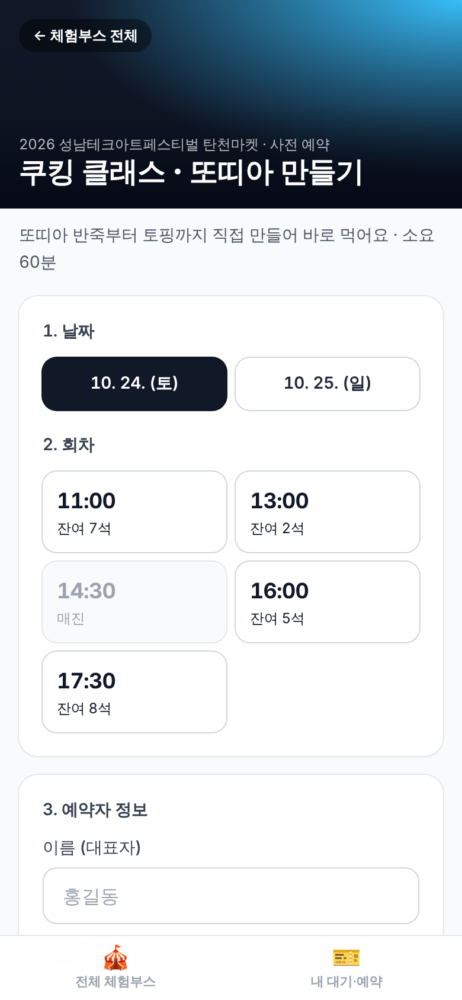
사전 예약 · 날짜·회차 선택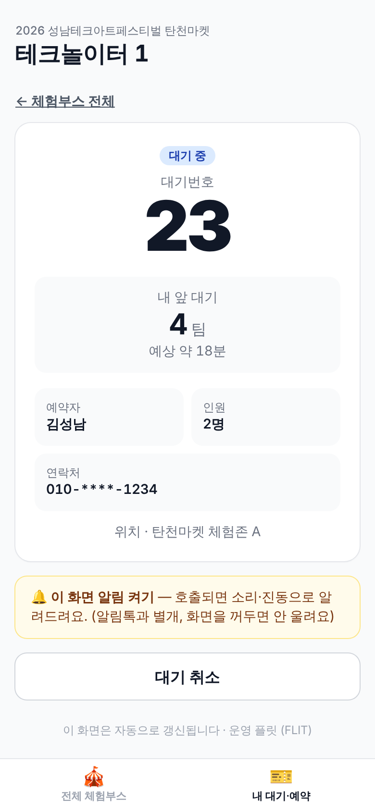
내 대기표 · 앞 대기 팀 수, 자동 갱신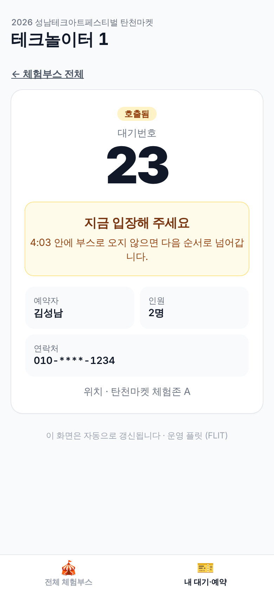
호출 · 남은 입장 시간 카운트다운, 진동·소리 알림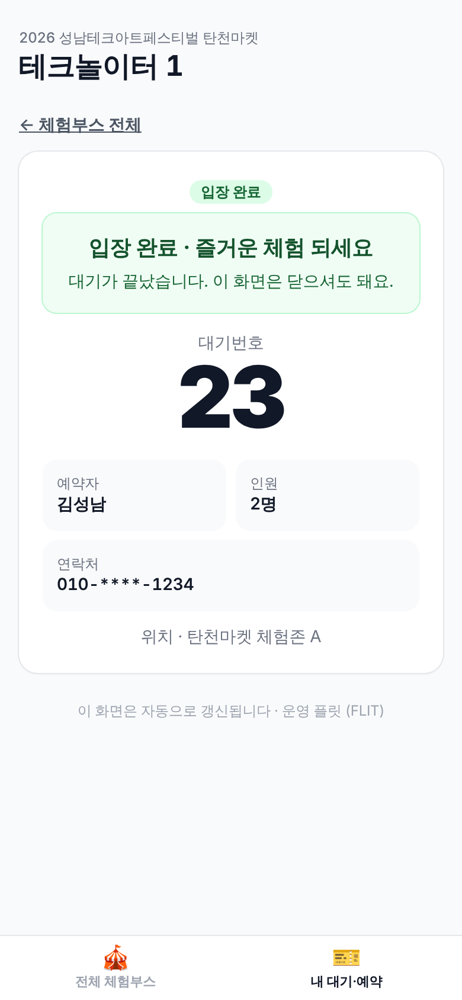
입장 완료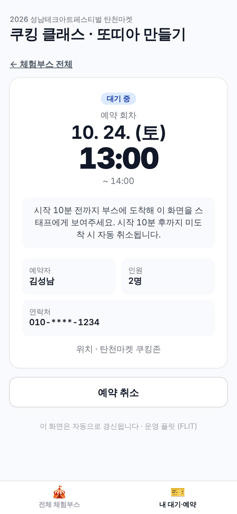
예약 확인 · 취소 가능 시한 내 셀프 취소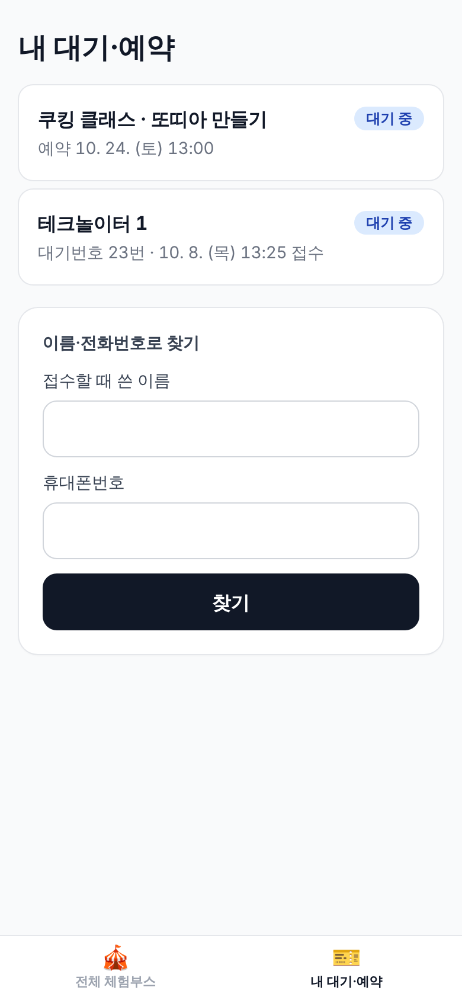
내 대기·예약 모아보기 · 이름/전화로 찾기모든 화면 하단에 「전체 체험부스」·「내 대기·예약」 이동 바가 고정되어 관람객이 길을 잃지 않습니다. 개인정보 수집 동의 문구는 행사별로 설정합니다.
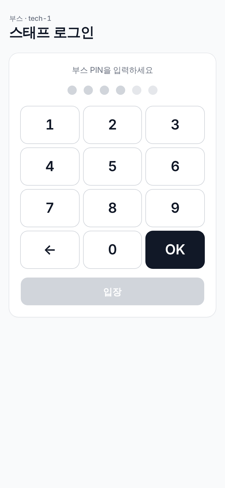
부스 PIN 입력 — 계정·앱 설치 없이 즉시 사용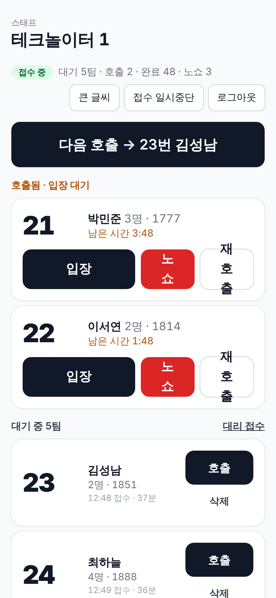
현장 대기 보드 · 「다음 호출」 원터치, 입장/노쇼/재호출, 대리 접수, 접수 일시중단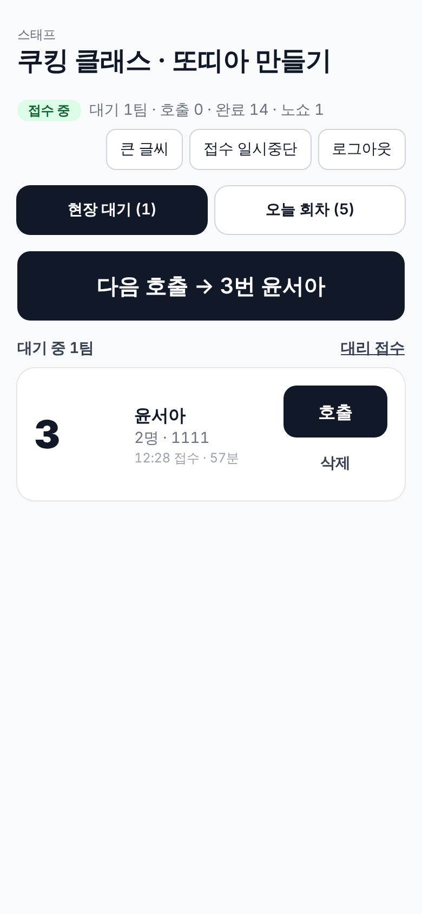
예약 보드 · 회차별 예약자 체크인, 날짜 탭, 현장 대기 탭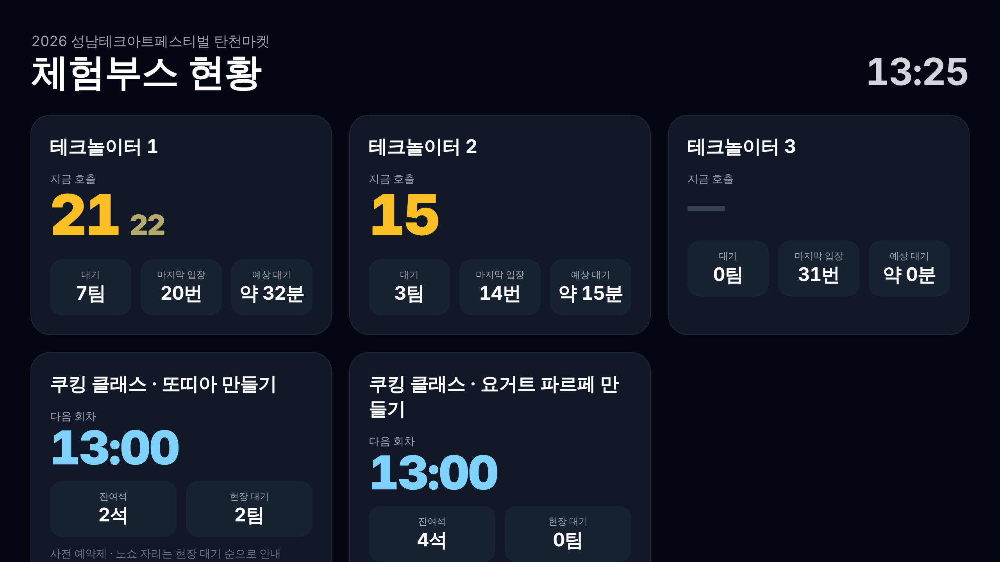
부스 입구 또는 안내소 모니터에 띄우는 전광판 화면. 현재 호출 번호·대기 팀 수·다음 회차·잔여석을 실시간 표시합니다.
| 메뉴 | 기능 |
|---|---|
| 행사 관리 | 행사 생성·운영 기간·공지·개인정보 동의 문구·데이터 보존 기간, 통합 QR·현황판 링크 |
| 부스 관리 | 부스 추가, 운영 트랙(대기/예약/혼합), 대표 사진·소개, 운영 설정(팀당 최대 인원, 호출 유효시간, 사전 알림 시점, 예약 오픈 일시, 예약 마감·취소 시한, 노쇼 기준, 노쇼 좌석 이관 여부), 스태프 PIN, 부스 QR, 회차 일괄 생성·취소 |
| 통계 | 행사·부스·일자별 접수/입장/노쇼 건수, 평균 대기시간, 시간대별 분포, 접수 채널(QR/현장 대리 접수) 비중, CSV 내려받기 |
| 발송 로그 | 알림톡 발송 내역·채널·실패 사유 조회 |
| 접속 코드 | 주최 측 담당자용 관리자 접속 코드 발급·회수 (이메일 계정 불필요) |
관람객 상태가 바뀔 때마다 카카오 알림톡이 발송됩니다. 발신 채널은 「플릿」 카카오톡 채널이며, 각 메시지에는 내 대기표 화면으로 바로 이동하는 버튼이 포함됩니다.
| 구분 | 시점 | 내용 |
|---|---|---|
| 현장 대기 | 접수 완료 | 대기번호 · 현재 앞 대기 팀 수 · 내 대기표 링크 |
| 차례 임박 | 앞 N팀 이하 남음(부스별 설정) — 부스 근처로 이동 안내 | |
| 호출 | 지금 입장 · 유효시간 내 미도착 시 순서 이월 안내 | |
| 입장 완료 | 입장 처리 확인 | |
| 순서 지남(노쇼) | 재접수 안내 | |
| 취소 | 본인 취소 확인 | |
| 사전 예약 | 예약 확정 | 일시 · 장소 · 인원 · 도착 안내 |
| 리마인드 | 전날 지정 시각 / 시작 N분 전 (부스별 설정) | |
| 체크인 완료 · 노쇼 | 체크인 확인 / 미도착 자동 취소 안내 | |
| 취소 | 본인 취소 확인 |
발송 수수료는 실비(알림톡 건당 약 8원)로 정산됩니다. 카카오톡 미사용자를 위한 문자 대체 발송은 선택 옵션입니다.
관람객이 많이 보는 화면(부스 목록·부스 페이지·현황판)은 엣지 캐시로 제공되어 접속자 수와 무관하게 서버 부하가 일정합니다. 동시 접속 3,000명 기준으로 설계·부하 테스트를 수행하며, 행사 기간에는 데이터베이스 사양을 상향 운영합니다.
대기번호 발급과 좌석 예약은 데이터베이스 수준에서 직렬화되어 번호 중복·정원 초과가 발생하지 않습니다. 노쇼 처리·좌석 이관·리마인드 발송은 서버 스케줄러가 매분 자동 수행합니다.
서비스 상태를 상시 모니터링하며, 관람객 화면 장애 시에도 알림 발송은 독립적으로 동작합니다. 스태프 화면 장애 시에는 종이 번호표·육성 호출로 즉시 전환하고 복구 후 대리 접수로 반영하는 비상 절차를 매뉴얼로 제공합니다.
수집 항목은 이름·휴대폰번호·인원으로 최소화하고, 관람객 화면에는 연락처 뒷자리만 표시합니다. 행사 종료 후 설정한 보존 기간(기본 7일)이 지나면 개인정보를 자동 파기하며, 동의 문구는 행사별로 설정합니다.
| 시점 | 단계 | 내용 | 담당 |
|---|---|---|---|
| D-14 | 요구사항 확정 | 부스 목록·운영 트랙·운영 시간·회차·정원·예약 오픈 일시 확정 | 주최 ↔ 플릿 |
| D-10 | 행사 세팅 | 행사·부스 등록, 운영값 설정, 관리자 접속 코드 발급, QR 이미지 전달 | 플릿 |
| D-7 | 사인물 제작 | 통합 QR·부스별 QR 사인물 디자인·출력 (QR 이미지는 플릿 제공) | 주최 |
| D-3 | 리허설·교육 | 스태프 매뉴얼(1장) 배포, 접수→호출→입장→노쇼 시연, 알림톡 수신 확인 | 플릿 + 주최 |
| D-day | 현장 운영 | 스태프는 부스 PIN으로 로그인 후 운영, 플릿은 원격 모니터링·즉시 대응 | 주최 + 플릿 |
| D+1 ~ | 결과 보고 | 부스별 운영 통계·CSV 전달, 보존 기간 경과 후 개인정보 파기 | 플릿 |
| 운영사 | 애즈셉 (ASSAP) · 브랜드 플릿 (FLIT) / 플릿유니온 |
|---|---|
| 대표자 | 이아로 |
| 사업자등록번호 | 655-26-02147 |
| 주소 | 서울특별시 도봉구 마들로 724, 213호 |
| 연락처 | 010-8018-8492 · hello@flitunion.com · www.flitunion.com |